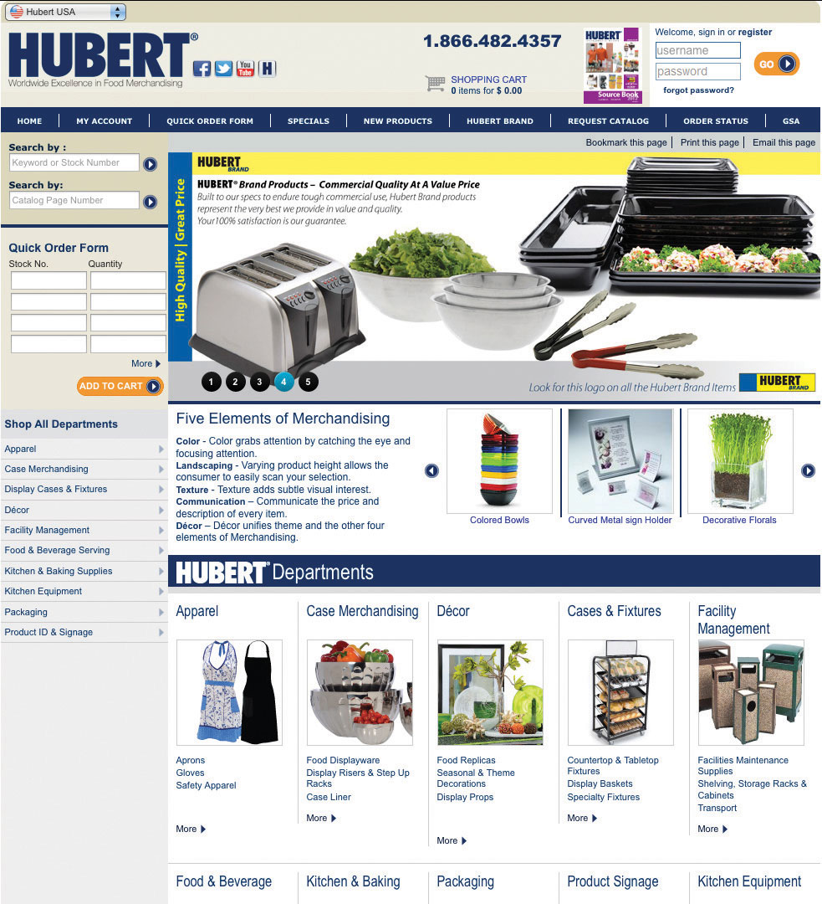
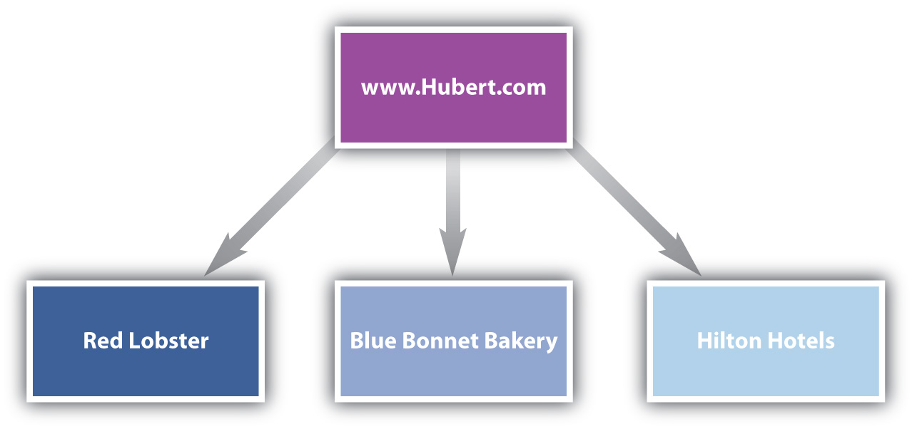
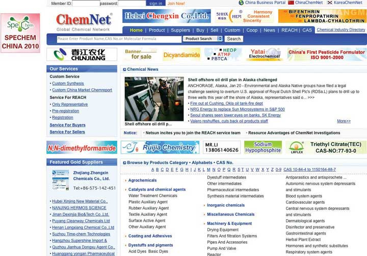
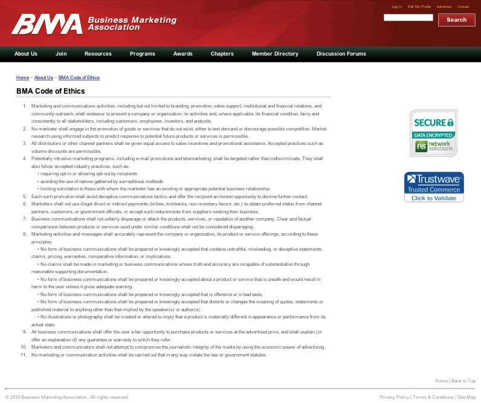

In the last chapter, we talked about the buying behavior of consumers—people like you and me who buy products for our own personal use. However, many businesses don’t offer their goods and services to individual consumers at all. Instead, their customers are other businesses, institutions, or government organizations. These are the business-to-business (B2B) markets we talked about in Chapter 1 "What Is Marketing?".
Business-to-business (B2B) markets differ from business-to-consumer (B2C) markets in many ways. For one, the number of products sold in business markets dwarfs the number sold in consumer markets. Suppose you buy a five-hundred-dollar computer from Dell. The sale amounts to a single transaction for you. But think of all the transactions Dell had to go through to sell you that one computer. Dell had to purchase many parts from many computer component makers. It also had to purchase equipment and facilities to assemble the computers, hire and pay employees, pay money to create and maintain its Web site and advertise, and buy insurance and accounting and financial services to keep its operations running smoothly. Many transactions had to happen before you could purchase your computer.
Each of those transactions needed a salesperson. Each of those companies have a marketing department. Thus, there are a lot more college marketing graduates going into B2B companies than in B2C, which is reason enough to spend some time studying the subject. There are other differences, too.
Business products can be very complex. Some need to be custom built or retrofitted for buyers. The products include everything from high-dollar construction equipment to commercial real estate and buildings, military equipment, and billion-dollar cruise liners used in the tourism industry. A single customer can account for a huge amount of business. Some businesses, like those that supply the U.S. auto industry around Detroit, have just a handful of customers—General Motors, Chrysler, and/or Ford. Consequently, you can imagine why these suppliers become very worried when the automakers fall on hard times.
Not only can business products be complex, but so can figuring out the buying dynamics of organizations. Many people within an organization can be part of the buying process and have a say in ultimately what gets purchased, how much of it, and from whom. Having different people involved makes business marketing much more complicated. And because of the quantities each business customer is capable of buying, the stakes are high. For some organizations, losing a big account can be financially devastating and winning one can be a financial bonanza.
How high are the stakes? Table 4.1 "Top Five Corporations Worldwide in Terms of Their Revenues" shows a recent ranking of the top five corporations in the world in terms of the sales they generate annually. Believe it or not, these companies earn more in a year than all the businesses of some countries do. Imagine the windfall you could gain as a seller by landing an exclusive account with any one of them.
Table 4.1 Top Five Corporations Worldwide in Terms of Their Revenues
| Company | Sales (Billions of Dollars) |
|---|---|
| Walmart Stores | 422 |
| Royal Dutch Shell | 369 |
| ExxonMobil | 341 |
| PetroChina | 222 |
| Chevron | 189 |
| Note: Numbers have been rounded to the nearest billion. | |
Source: “The Global 2000,” Forbes, April 8, 2011, http://www.forbes.com/lists/2011/18/global-09_The-Global-2000_Sales.html (accessed October 10, 2011).
Generally, the more high-dollar and complex the item being sold is, the longer it takes for the sale to be made. The sale of a new commercial jet to an airline company such as Southwest Airlines, Delta, or American Airlines can literally take years to be completed. Purchases such as these are risky for companies. The buyers are concerned about many factors, such as the safety, reliability, and efficiency of the planes. They also generally want the jets customized in some way. Consequently, a lot of time and effort is needed to close these deals.
Unlike many consumers, most business buyers demand that the products they buy meet strict standards. Take for example the Five Guys burger chain, based in Virginia. The company taste-tested eighteen different types of mayonnaise before settling on the one it uses. Would you be willing to taste eighteen different brands of mayonnaise before buying one? Probably not.Michael Steinberg, “A Fine Diner,” Financial Times, November 21–22, 2009, 5.
Another characteristic of B2B markets is the level of personal selling that goes on. Salespeople personally call on business customers to a far greater extent than they do consumers. Most of us have had door-to-door salespeople call on us occasionally. However, businesses often have multiple salespeople call on them in person daily, and some customers even provide office space for key vendors’ salespeople. Table 4.2 "Business-to-Consumer Markets versus Business-to-Business Markets: How They Compare" outlines the main differences between B2C and B2B markets.
Table 4.2 Business-to-Consumer Markets versus Business-to-Business Markets: How They Compare
| Consumer Market | Business Market |
|---|---|
| Many customers, geographically dispersed | Fewer customers, often geographically concentrated, with a small number accounting for most of the company’s sales |
| Smaller total dollar amounts due to fewer transactions | Larger dollar amounts due to more transactions |
| Shorter decision cycles | Longer decision cycles |
| More reliance on mass marketing via advertising, Web sites, and retailing | More reliance on personal selling |
| Less-rigid product standards | More-rigid product standards |
Even though they don’t sell their products to consumers like you and me, B2B sellers carefully watch general economic conditions to anticipate consumer buying patterns. The firms do so because the demand for business products is based on derived demand. Derived demandDemand that springs from, or is derived from, a secondary source other than the primary buyer of the product. is demand that springs from, or is derived from, a source other than the primary buyer of a product. When it comes to B2B sales, that source is consumers. If consumers aren’t demanding the products produced by businesses, the firms that supply products to these businesses are in big trouble.
Fluctuating demandDemand that fluctuates sharply in response to a change in consumer demand. is another characteristic of B2B markets: a small change in demand by consumers can have a big effect throughout the chain of businesses that supply all the goods and services that produce it. Often, a bullwhip type of effect occurs. If you have ever held a whip, you know that a slight shake of the handle will result in a big snap of the whip at its tip. Essentially, consumers are the handle and businesses along the chain compose the whip—hence the need to keep tabs on end consumers. They are a powerful purchasing force.
For example, Cisco makes routers, which are specialized computers that enable computer networks to work. If Google uses five hundred routers and replaces 10 percent of them each year, that means Google usually buys fifty routers in a given year. What happens if consumer demand for the Internet falls by 10 percent? Then Google needs only 450 routers. Google’s demand for Cisco’s routers therefore becomes zero. Suppose the following year the demand for the Internet returns to normal. Google now needs to replace the fifty routers it didn’t buy in the first year plus the fifty it needs to replace in the second year. So in year two, Cisco’s sales go from zero to a hundred, or twice normal. Thus Cisco experiences a bullwhip effect, whereas Google’s sales vary only by 10 percent.
Because consumers are such a powerful force, some companies go so far as to try to influence their B2B sales by directly influencing consumers even though they don’t sell their products to them. Intel is a classic case. Do you really care what sort of microprocessing chip gets built into your computer? Intel would like you to, which is why it has run a long series of commercials on TV to think about what chip is inside your computer. The following video clip shows how they’ve continued to promote “Intel Inside” even though their actual product has changed. The commercial isn’t likely to persuade a computer manufacturer to buy Intel’s chips. But the manufacturer might be persuaded to buy them if it’s important to you. Derived demand is also the reason Intel demands that the buyers of its chips put a little “Intel Inside” sticker on each computer they make—so you get to know Intel and demand its products.
Intel Animations Over the Years
(click to see video)Does this commercial make you want to buy a computer with “Intel Inside”? Intel hopes so.
B2B buyers also keep tabs on consumers to look for patterns that could create joint demand. Joint demandWhen the demand for one product increases the demand for another. occurs when the demand for one product increases the demand for another. For example, when a new video console like the Xbox comes out, it creates demand for a whole new crop of video games.
The History of Pong
(click to see video)Watch this video to see the first video game ever invented, Pong, and learn about its maker. Of course, Pong got old pretty fast, so more games were quickly developed and continue to be, especially when new gaming systems hit the market.
B2B markets differ from B2C markets in many ways. There are more transactions in B2B markets and more high-dollar transactions because business products are often costly and complex. There are also fewer buyers in B2B markets, but they spend much more than the typical consumer does and have more-rigid product standards. The demand for business products is based on derived demand. Derived demand is demand that springs from, or is derived from, a secondary source other than the primary buyer of a product. For businesses, this source is consumers. Fluctuating demand is another characteristic of B2B markets: a small change in demand by consumers can have a big effect throughout the chain of businesses that supply all the goods and services that produce it.
Business buyers can be either nonprofit or for-profit businesses. To help you get a better idea of the different types of business customers in B2B markets, we’ve put them into four basic categories: producers, resellers, governments, and institutions.
ProducersCompanies that purchase goods and services that they transform into other products. are companies that purchase goods and services that they transform into other products. They include both manufacturers and service providers. Procter & Gamble, General Motors, McDonald’s, Dell, and Delta Airlines are examples. So are the restaurants around your campus, your dentist, your doctor, and the local tattoo parlor. All these businesses have to buy certain products to produce the goods and services they create. General Motors needs steel and hundreds of thousands of other products to produce cars. McDonald’s needs beef and potatoes. Delta Airlines needs fuel and planes. Your dentist needs drugs such as Novocain, oral tools, and X-ray machines. Your local tattoo parlor needs special inks and needles and a bright neon sign that flashes “open” in the middle of the night.
ResellersCompanies that sell goods and services produced by other firms without materially changing them. are companies that sell goods and services produced by other firms without materially changing them. They include wholesalers, brokers, and retailers. Walmart and Target are two big retailers you are familiar with. Large wholesalers, brokers, and retailers have a great deal of market power. If you can get them to buy your products, your sales can exponentially increase.
Every day, retailers flock to Walmart’s corporate headquarters in Bentonville, Arkansas, to try to hawk their products. But would it surprise you that not everybody wants to do business with a powerhouse like Walmart? Jim Wier, one-time CEO of the company that produces Snapper-brand mowers and snowblowers, actually took a trip to Walmart’s headquarters to stop doing business with the company. Why? Snapper products are high-end, heavy-duty products. Wier knew that Walmart had been selling his company’s products for lower and lower prices and wanted deeper and deeper discounts from Snapper. He believed Snapper products were too expensive for Walmart’s customers and always would be, unless the company started making cheaper-quality products or outsourced their manufacturing overseas, which is something he didn’t want to do.
“The whole visit to Wal-Mart’s headquarters is a great experience,” said Wier about his trip. “It’s so crowded, you have to drive around, waiting for a parking space. You have to follow someone who is leaving, walking back to their car, and get their spot. Then you go inside this building, you register for your appointment, they give you a badge, and then you wait in the pews with the rest of the peddlers, the guy with the bras draped over his shoulder.” Eventually, would-be suppliers were taken into small cubicles where they had thirty minutes to make their case. “It’s a little like going to see the principal, really,” he said.Charles Fishman, “The Man Who Said No to Wal-Mart,” Fast Company, December 19, 2007, http://www.fastcompany.com/magazine/102/open_snapper.html?page=0%2C2 (accessed December 13, 2009).
Can you guess the biggest purchaser of goods and services in the world? It is the U.S. government. It purchases everything you can imagine, from paper and fax machines to tanks and weapons, buildings, toilets for NASA (the National Aeronautics and Space Administration), highway construction services, and medical and security services. State and local governments buy enormous amounts of products, too. They contract with companies that provide citizens with all kinds of services from transportation to garbage collection. (So do foreign governments, provinces, and localities, of course.) Business-to-government (B2G) marketsMarkets in which local, state, and federal governments buy products., or when companies sell to local, state, and federal governments, represent a major selling opportunity, even for smaller sellers. In fact, many government entities specify that their agencies must award a certain amount of business to small businesses, minority- and women-owned businesses, and businesses owned by disabled veterans.
There is no one central department or place in which all these products are bought and sold. Companies that want to sell to the U.S. government should first register with the Central Contractor Registry at http://www.CCR.gov. They should then consult the General Services Administration (GSA) Web site (http://www.gsa.gov). The GSA helps more than two hundred federal agencies buy a wide variety of products purchased routinely. The products can include office supplies, information technology services, repair services, vehicles, and many other products purchased by agencies on a regular basis. Consequently, it is a good starting point. However, the GSA won’t negotiate a contract for the NASA toilet or a fighter jet. It sticks to routine types of purchases.
Figure 4.2

The General Services Administration (GSA) is a good starting point for companies that want to do business with the federal government. The U.S. Small Business Administration (SBA) also offers sellers a great deal of information on marketing to the government, including online courses that explain how to do it.
The existence of the GSA doesn’t mean the agencies it works with don’t have any say over what is purchased for them. The agencies themselves have a big say, so B2B sellers need to contact them and aggressively market their products to them. After all, agencies don’t buy products, people do. Fortunately, every agency posts on the Internet a forecast of its budget, that is, what it is planning on spending money on in the coming months. The agencies even list the names, addresses, and e-mails of contact persons responsible for purchasing decisions. Many federal agencies are able to purchase as much as $25,000 of products at a time by simply using a government credit card. This fact makes them a good target for small businesses.
It’s not unusual for each agency or department to have its own procurement policies that must be followed. Would-be sellers are often asked to submit sealed bids that contain the details of what they are willing to provide the government and at what price. But contrary to popular belief, it’s not always the lowest bid that’s accepted. Would the United States want to send its soldiers to war in the cheapest planes and tanks, bearing the lowest-cost armor? Probably not. Like other buyers, government buyers look for the best value.
Yet selling to the government is not always easy. The GSA has its own red tape, as does each government division, and many purchases come with additional regulations or specifications written into the legislation that funded them. Because many purchases can be rather large, decision cycles can be very long and involve large buying centers. Some businesses avoid selling to the government because the perceived hassle is too great to warrant the effort. Other businesses, though, realize that learning the ins and outs of government purchases can become a sustainable competitive advantage.
Institutional marketsNonprofit organizations such as the American Red Cross, churches, hospitals, charitable organizations, private colleges, and civic clubs. include nonprofit organizations such as the American Red Cross, churches, hospitals, charitable organizations, private colleges, civic clubs, and so on. Like government and for-profit organizations, they buy a huge quantity of products and services. Holding costs down is especially important to them. The lower their costs are, the more people they can provide their services to.
The businesses and products we have mentioned so far are broad generalizations to help you think about the various markets in which products can be sold. In addition, not all products a company buys are high dollar or complex. Businesses buy huge quantities of inexpensive products, too. McDonald’s, for example, buys a lot of toilet paper, napkins, bags, employee uniforms, and so forth. Pretty much any product you and I use is probably used for one or more business purposes (cell phones and cell-phone services, various types of food products, office supplies, and so on). Some of us own real estate, and so do many businesses. But very few of us own many of the other products businesses sell to one another: cranes, raw materials such as steel, fiber-optic cables, and so forth.
That said, a smart B2B marketer will look at all the markets we have mentioned to see if they represent potential opportunities. The Red Cross will have no use for a fighter jet, of course. However, a company that manufactures toilet paper might be able to market it to both the Red Cross and the U.S. government. B2B opportunities abroad and online B2B markets can also be successfully pursued. We will discuss these topics later in the chapter.
Figuring out who exactly in B2B markets is responsible for what gets purchased and when often requires some detective work for marketing professionals and the salespeople they work with. Think about the college textbooks you buy. Who decides which ones ultimately are purchased by the students at your school? Do publishers send you e-mails about certain books they want you to buy? Do you see ads for different types of chemistry or marketing books in your school newspaper or on TV? Generally, you do not. The reason is that even though you buy the books, the publishers know that professors ultimately decide which textbooks are going to be used in the classroom. Consequently, B2B sellers largely concentrate their efforts on those people.
That’s not to say that to some extent the publishers don’t target you. They may offer you a good deal by packaging a study guide with your textbook or some sort of learning supplement online you can purchase. They might also offer your bookstore manager a discount for buying a certain number of textbooks. However, a publishing company that focused on selling its textbooks directly to you or to a bookstore manager would go out of business. They know the true revenue generators are professors.
The question is, which professors? Some professors choose their own books. Adjunct professors often don’t have a choice—their books are chosen by a course coordinator or the dean or chair of the department. Still other decisions are made by groups of professors, some of whom have more say over the final decision than others. Are you getting the picture? Figuring out where to start in B2B sales can be a little bit like a scavenger hunt.
Business buyers can be either nonprofit or for-profit businesses. There are four basic categories of business buyers: producers, resellers, governments, and institutions. Producers are companies that purchase goods and services that they transform into other products. They include both manufacturers and service providers. Resellers are companies that sell goods and services produced by other firms without materially changing them. They include wholesalers, brokers, and retailers. Local, state, and national governments purchase large quantities of goods and services. Institutional markets include nonprofit organizations such as the American Red Cross, churches, hospitals, charitable organizations, private colleges, civic clubs, and so on. Holding costs down is especially important to them because it enables them to provide their services to more people. Figuring out who exactly in B2B markets is responsible for what gets purchased and when often requires some detective work by marketing professionals and the salespeople they work with.
The professors who form a committee at your school to choose textbooks are acting like a buying center. Buying centersGroups of people within organizations who make purchasing decisions. are groups of people within organizations who make purchasing decisions. Large organizations often have permanent departments that consist of the people who, in a sense, shop for a living. They are professional buyers, in other words. Their titles vary. In some companies, they are simply referred to as buyers. In other companies, they are referred to as purchasing agents, purchasing managers, or procurement officers. Retailers often refer to their buyers as merchandisers. Most of the people who do these jobs have bachelor’s of science degrees. Some undergo additional industry training to obtain an advanced purchasing certification designation.U.S. Bureau of Labor Statistics, “Purchasing Managers, Buyers, and Purchasing Agents,” Occupational Outlook Handbook, 2010–11 ed., December 17, 2009, http://www.bls.gov/oco/ocos023.htm (accessed January 8, 2010).
Buyers can have a large impact on the expenses, sales, and profits of a company. Pier 1’s purchasing agents literally comb the entire world looking for products the company’s customers want most. What happens if the products the purchasing agents pick don’t sell? Pier 1’s sales fall, and people get fired. This doesn’t happen in B2C markets. If you pick out the wrong comforter for your bed, you don’t get fired. Your bedroom just looks crummy.
Consequently, professional buyers are shrewd. They have to be because their jobs depend on it. Their jobs depend on their choosing the best products at the best prices from the best vendors. Professional buyers are also well informed and less likely to buy a product on a whim than consumers. The following sidebar outlines the tasks professional buyers generally perform.
Increasingly, purchasing managers have become responsible for buying not only products but also functions their firms want to outsource. The functions aren’t limited to manufacturing. They also include product innovation and design services, customer service and order fulfillment services, and information technology and networking services to name a few. Purchasing agents responsible for finding offshore providers of goods and services often take trips abroad to inspect the facilities of the providers and get a better sense of their capabilities.
Purchasing agents don’t make all the buying decisions in their companies, though. As we explained, other people in the organization often have a say, as well they should. Purchasing agents frequently need their feedback and help to buy the best products and choose the best vendors. The people who provide their firms’ buyers with input generally fall into one or more of the following groups:
InitiatorsPeople within the organization that first see the need for a product and, depending on their ability to make the final decision, either notify the purchasing agents of what is needed or lobby executives to consider making a change. are the people within the organization who first see the need for the product. But they don’t stop there; whether they have the ability to make the final decision of what to buy or not, they get the ball rolling. Sometimes they initiate the purchase by simply notifying purchasing agents of what is needed; other times they have to lobby executives to consider making a change.
UsersThe people and groups within the organization that actually use the product. are the people and groups within the organization that actually use the product. Frequently, one or more users serve as an initiator in an effort to improve what they produce or how they produce it, and they certainly have the responsibility for implementing what is purchased. Users often have certain specifications in mind for products and how they want them to perform. An example of a user might be a professor at your school who wants to adopt an electronic book and integrate it into his or her online course.
InfluencersPeople who may or may not use the product but actively participate in the purchasing process in order to secure a decision they consider favorable. are people who may or may not use the product but have experience or expertise that can help improve the buying decision. For example, an engineer may prefer a certain vendor’s product platform and try to persuade others that it is the best choice.
If you want to sell a product to a large company like Walmart, you can’t just walk in the door of its corporate headquarters and demand to see a purchasing agent. You will first have to get past of a number of gatekeepersPeople who decide if and when a salesperson gets access to members of the buying center., or people who will decide if and when you get access to members of the buying center. These are people such as buying assistants, personal assistants, and other individuals who have some say about which sellers are able to get a foot in the door.
Gatekeepers often need to be courted as hard as prospective buyers do. They generally have a lot of information about what’s going on behind the scenes and a certain amount of informal power. If they like you, you’re in a good position as a seller. If they don’t, your job is going to be much harder. In the case of textbook sales, the gatekeepers are often faculty secretaries. They know in advance which instructors will be teaching which courses and the types of books they will need. It is not uncommon for faculty secretaries to screen the calls of textbook sales representatives.
The deciderThe person who makes the final purchasing decision. is the person who makes the final purchasing decision. The decider might or might not be the purchasing manager. Purchasing managers are generally solely responsible for deciding upon routine purchases and small purchases. However, the decision to purchase a large, expensive product that will have a major impact on a company is likely to be made by or with the help of other people in the organization, perhaps even the CEO. The decision may be made by a single decider, or there may be a few who reach consensus. Further, deciders take into account the input of all of the other participants: the users, influencers, and so forth. Sellers, of course, pay special attention to what deciders want. “Who makes the buying decision?” is a key question B2B sales and marketing personnel are trained to quickly ask potential customers.
We made it a point earlier in our discussion to explain how rational and calculating business buyers are. So would it surprise you to learn that sometimes the dynamics that surround B2B marketing don’t lead to the best purchasing decisions? Interpersonal factors among the people making the buying decision often have an impact on the products chosen, good or bad. (You can think of this phenomenon as “office politics.”) For example, one person in a buying unit might wield a lot of power and greatly influence the purchasing decision. However, other people in the unit might resent the power he or she wields and insist on a different offering, even if doesn’t best meet the organization’s needs. Savvy B2B marketers are aware of these dynamics and try their best to influence the outcome.
Personal factors play a part. B2B buyers are overwhelmed with choices, features, benefits, information, data, and metrics. They often have to interview dozens of potential vendors and ask them hundreds of questions. No matter how disciplined they are in their buying procedures, they will often find a way to simplify their decision making either consciously or subconsciously.Jon Miller, “Why B2B Branding Matters in B2B Marketing,” Marketo.com, March 18, 2007, http://blog.marketo.com/blog/2007/03/b2b_branding_wh.html (accessed December 13, 2009). For example, a buyer deciding upon multiple vendors running neck and neck might decide to simply choose the vendor whose sales representative he likes the most.
Factors such as these can be difficult for a company to control. However, branding—how successful a company is at marketing its brands—is a factor under a company’s control, says Kevin Randall of Movéo Integrated Branding, an Illinois-based marketing-consulting firm. Sellers can use their brands to their advantage to help business buyers come to the conclusion that their products are the best choice. IBM, for example, has long had a strong brand name when it comes to business products. The company’s reputation was so solid that for years the catchphrase “Nobody ever got fired for buying IBM” was often repeated among purchasing agents—and by IBM salespeople of course!Jon Miller, “Why B2B Branding Matters in B2B Marketing,” Marketo.com, March 18, 2007, http://blog.marketo.com/blog/2007/03/b2b_branding_wh.html (accessed December 13, 2009).
In short, B2B marketing is very strategic. Selling firms try to gather as much information about their customers as they can and use that information to their advantage. As an analogy, imagine if you were interested in asking out someone you had seen on campus. Sure, you could simply try to show up at a party or somewhere on campus in the hopes of meeting the person. But if you were thinking strategically, you might try to find out everything you could about the person, what he or she likes to do and so forth, and then try to arrange a meeting. That way when you did meet the person, you would be better able to strike up a conversation and develop a relationship with him or her. B2B selling is similarly strategic. Little is left to chance.
Buying centers are groups of people within organizations who make purchasing decisions. The buying centers of large organizations employ professional buyers who, in a sense, shop for a living. They don’t make all the buying decisions in their companies, though. The other people who provide input are users, or the people and groups within the organization that actually use the product; influencers, or people who may or may not use the product but have experience or expertise that can help improve the buying decision; gatekeepers, or people who will decide if and when a seller gets access to members of the buying center; and deciders, or the people who make the final purchasing decision. Interpersonal dynamics between the people in a buying center will affect the choices the center makes. Personal factors, such as how likeable a seller is, play a part because buyers are often overwhelmed with information and will find ways to simplify their decision making.
Next, let’s look at the stages in the B2B buying process. They are similar to the stages in the consumer’s buying process.
1. A need is recognized. Someone recognizes that the organization has a need that can be solved by purchasing a good or service. Users often drive this stage, although others can serve the role of initiator. In the case of the electronic textbook, it could be, for example, the professor assigned to teach the online course. However, it could be the dean or chairman of the department in which the course is taught.
2. The need is described and quantified. Next, the buying center, or group of people brought together to help make the buying decision, work to put some parameters around what needs to be purchased. In other words, they describe what they believe is needed, the features it should have, how much of it is needed, where, and so on. For more technical or complex products the buyer will define the product’s technical specifications. Will an off-the-shelf product do, or must it be customized?
Users and influencers come into play here. In the case of our electronic book, the professor who teaches the online course, his teaching assistants, and the college’s information technology staff would try to describe the type of book best suited for the course. Should the book be posted on the Web as this book is? Should it be downloadable? Maybe it should be compatible with Amazon’s Kindle. Figure 4.6 "An Example of Product Specifications Developed for a B2B Purchase" shows the specifications developed for a janitorial-services purchase by the state of Kentucky.
Figure 4.6 An Example of Product Specifications Developed for a B2B Purchase

3. Potential suppliers are searched for. At this stage, the people involved in the buying process seek out information about the products they are looking for and the vendors that can supply them. Most buyers look online first to find vendors and products, then attend industry trade shows and conventions and telephone or e-mail the suppliers with whom they have relationships. The buyers might also consult trade magazines, the blogs of industry experts, and perhaps attend Webinars conducted by vendors or visit their facilities. Purchasing agents often play a key role when it comes to deciding which vendors are the most qualified. Are they reliable and financially stable? Will they be around in the future? Do they need to be located near the organization or can they be in another region of the country or in a foreign country? The vendors that don’t make the cut are quickly eliminated from the running.
4. Qualified suppliers are asked to complete responses to requests for proposal (RFPs). Each vendor that makes the cut is sent a request for proposal (RFP)An invitation to submit a bid to supply the good or service., which is an invitation to submit a bid to supply the good or service. An RFP outlines what the vendor is able to offer in terms of its product—its quality, price, financing, delivery, after-sales service, whether it can be customized or returned, and even the product’s disposal, in some cases. Good sales and marketing professionals do more than just provide basic information to potential buyers in RFPs. They focus on the buyer’s problems and how to adapt their offers to solve those problems.
Oftentimes the vendors formally present their products to the people involved in the buying decision. If the good is a physical product, the vendors generally provide the purchaser with samples, which are then inspected and sometimes tested. They might also ask satisfied customers to make testimonials or initiate a discussion with the buyer to help the buyer get comfortable with the product and offer advice on how best to go about using it.
5. The proposals are evaluated and supplier(s) selected. During this stage, the RFPs are reviewed and the vendor or vendors selected. RFPs are best evaluated if the members agree on the criteria being evaluated and the importance of each. Different organizations will weigh different parts of a proposal differently, depending on their goals and the products they purchase. The price might be very important to some sellers, such as discount and dollar stores. Other organizations might be more focused on top-of-the-line goods and the service a seller provides. Recall that the maker of Snapper mowers and snowblowers was more focused on purchasing quality materials to produce top-of-the-line equipment that could be sold at a premium. Still other factors include the availability of products and the reliability with which vendors can supply them. Reliability of supply is extremely important because delays in the supply chain can shut down a company’s production of goods and services and cost the firm its customers and reputation.
For high-priced, complex products, after-sales service is likely to be important. A fast-food restaurant might not care too much about the after-sales service for the paper napkins it buys—just that they are inexpensive and readily available. However, if the restaurant purchases a new drive-thru ordering system, it wants to be assured that the seller will be on hand to repair the system if it breaks down and perhaps train its personnel to use the system.
A scorecard approach can help a company rate the RFPs. Figure 4.7 "A Scorecard Used to Evaluate RFPs" is a simple example of a scorecard completed by one member of a buying team. The scorecards completed by all the members of the buying team can then be tabulated to help determine the vendor with the highest rating.
Figure 4.7 A Scorecard Used to Evaluate RFPs

Selecting Single versus Multiple Suppliers. Sometimes organizations select a single supplier to provide the good or service. This can help streamline a company’s paperwork and other buying processes. With a single supplier, instead of negotiating two contracts and submitting two purchase orders to buy a particular offering, the company only has to do one of each. Plus, the more the company buys from one vendor, the bigger the volume discount it gets. Single sourcing can be risky, though, because it leaves a firm at the mercy of a sole supplier. What if the supplier doesn’t deliver the goods, goes out of business, or jacks up its prices? Many firms prefer to do business with more than one supplier to avoid problems such as these. Doing business with multiple suppliers keeps them on their toes. If they know their customers can easily switch their business over to another supplier, they are likely to compete harder to keep the business.
6. An order routine is established. This is the stage in which the actual order is put together. The order includes the agreed-upon price, quantities, expected time of delivery, return policies, warranties, and any other terms of negotiation.Ron Brauner, “The B2B Process: Eight Stages of the Business Sales Funnel,” Ron Brauner Integrated Marketing (Web site), July 31, 2008, http://www.ronbrauner.com/?p=68 (accessed December 13, 2009). The order can be made on paper, online, or sent electronically from the buyer’s computer system to the seller’s. It can also be a one-time order or consist of multiple orders that are made periodically as a company needs a good or service. Some buyers order products continuously by having their vendors electronically monitor their inventory for them and ship replacement items as the buyer needs them. (We’ll talk more about inventory management in Chapter 9 "Using Supply Chains to Create Value for Customers".)
7. A postpurchase evaluation is conducted and the feedback provided to the vendor. Just as consumers go through an evaluation period after they purchase goods and services, so do businesses. The buying unit might survey users of the product to see how satisfied they were with it. Cessna Aircraft Company, a small U.S. airplane maker, routinely surveys the users of the products it buys so they can voice their opinions on a supplier’s performance.“Cessna Expands Scorecard to Indirect Suppliers,” Purchasing 138, no. 6 (June 2009): 58.
Some buyers establish on-time performance, quality, customer satisfaction, and other measures for their vendors to meet, and provide those vendors with the information regularly, such as trend reports that show if their performance is improving, remaining the same, or worsening. (The process is similar to a performance evaluation you might receive as an employee.) For example, Food Lion shares a wide variety of daily retail data and performance calculations with its suppliers in exchange for their commitment to closely collaborate with the grocery-store chain.
Keep in mind that a supplier with a poor performance record might not be entirely to blame. The purchasing company might play a role, too. For example, if the U.S. Postal Service contracts with FedEx to help deliver its holiday packages on time, but a large number of the packages are delivered late, FedEx may or may not be to blame. Perhaps a large number of loads the U.S. Postal Service delivered to FedEx were late, weather played a role, or shipping volumes were unusually high. Companies need to collaborate with their suppliers to look for ways to improve their joint performance. Some companies hold annual symposiums with their suppliers to facilitate cooperation among them and to honor their best suppliers.William Copacino, “Unlocking Value through the Supplier Scorecard,” Supply Chain Management Review, July 8, 2009.
To some extent the stages an organization goes through and the number of people involved depend on the buying situation. Is this the first time the firm has purchased the product or the fiftieth? If it’s the fiftieth time, the buyer is likely to skip the search and other phases and simply make a purchase. A straight rebuyWhen a purchaser buys the same product in the same quantities from the same vendor. is a situation in which a purchaser buys the same product in the same quantities from the same vendor. Nothing changes, in other words. Postpurchase evaluations are often skipped, unless the buyer notices an unexpected change in the offering such as a deterioration of its quality or delivery time.
Sellers like straight rebuys because the buyer doesn’t consider any alternative products or search for new suppliers. The result is a steady, reliable stream of revenue for the seller. Consequently, the seller doesn’t have to spend a lot of time on the account and can concentrate on capturing other business opportunities. Nonetheless, the seller cannot ignore the account. The seller still has to provide the buyer with top-notch, reliable service or the straight-rebuy situation could be jeopardized.
If an account is especially large and important, the seller might go so far as to station personnel at the customer’s place of business to be sure the customer is happy and the straight-rebuy situation continues. IBM and the management consulting firm Accenture station employees all around the world at their customers’ offices and facilities.
By contrast, a new-buyWhen a firm purchases a product for the first time. selling situation occurs when a firm purchases a product for the first time. Generally speaking, all the buying stages we described in the last section occur. New buys are the most time consuming for both the purchasing firm and the firms selling to them. If the product is complex, many vendors and products will be considered, and many RFPs will be solicited.
New-to-an-organization buying situations rarely occur. What is more likely is that a purchase is new to the people involved. For example, a school district owns buildings. But when a new high school needs to be built, there may not be anyone in management who has experience building a new school. That purchase situation is a new buy for those involved.
A modified rebuyWhen a company wants to buy the same type of product it has in the past but make some modifications to it. occurs when a company wants to buy the same type of product it has in the past but make some modifications to it. Maybe the buyer wants different quantities, packaging, or delivery, or the product customized slightly differently. For example, your instructor might have initially adopted this textbook “as is” from its publisher, Unnamed Publisher, but then decided to customize it later with additional questions, problems, or content that he or she created or that was available from Unnamed Publisher.
A modified rebuy doesn’t necessarily have to be made with the same seller, however. Your instructor may have taught this course before, using a different publisher’s book. High textbook costs, lack of customization, and other factors may have led to dissatisfaction. In this case, she might visit with some other textbook suppliers and see what they have to offer. Some buyers routinely solicit bids from other sellers when they want to modify their purchases in order to get sellers to compete for their business. Likewise, savvy sellers look for ways to turn straight rebuys into modified buys so they can get a shot at the business. They do so by regularly visiting with customers and seeing if they have unmet needs or problems a modified product might solve.
The stages in the B2B buying process are as follows: Someone recognizes that the organization has a need that can be solved by purchasing a good or service. The need is described and quantified. Qualified suppliers are searched for, and each qualified supplier is sent a request for proposal (RFP), which is an invitation to submit a bid to supply the good or service. The proposals suppliers submit are evaluated, one or more supplier(s) selected, and an order routine with each is established. A postpurchase evaluation is later conducted and the feedback provided to the suppliers. The buying stages an organization goes through often depend on the buying situation—whether it’s a straight rebuy, new buy, or modified rebuy.
Another characteristic of B2B markets that you may or may not have noticed or thought about is that firms in the same industry tend to cluster in the same geographic areas. In the United States, many banks and financial companies are located on or near Wall Street in New York City. Many film and television companies operate out of Hollywood. Is it just by chance that this has occurred? No.
The clustering occurs because the resources these firms need—both human and natural—are located in some areas and not others. For example, the Gulf of Mexico is rich with oil deposits. As a result, many oil companies and facilities are located along or near the Gulf in cities such as Houston. Likewise, many high-tech companies are located in Silicon Valley (California). One reason is that nearby Stanford University is one of the top computer-science schools in the country and the firms want to hire graduates from the school.
But that’s not the only reason businesses in the same industry cluster together. Another reason is the sellers want to be close to their buyers. Bentonville, Arkansas, the world headquarters of Walmart, used to be a sleepy little rural town. As Walmart grew, so have the number of companies moving into the area to do business with Walmart. In the last twenty years, the size of the town has nearly tripled.
Why do companies want to be near their buyers? Let’s go back to our date analogy. Suppose you hit it off with the person you’re interested in and you become “an item.” You probably wouldn’t want to be half the world away from the person for a long period of time because you would miss the person and because you wouldn’t want a rival moving in on your turf! The same is true for sellers. Buyers also want to be close to their suppliers because it can help them get inventory more quickly. Dell’s suppliers are located right next to the company’s assembly plants. And, as you have learned, some companies actually locate their personnel on their customers’ sites.
Not all B2B buyers and sellers are cozying up to one another location-wise today, though: e-commerceCommerce conducted electronically, such as over the Internet., or commerce conducted electronically, such as over the Internet, has made locating near buyers less important. Consider the Hubert Company, a Cincinnati-based firm that sells supplies to the food industry. “Just ten years ago the Internet didn’t exist for the Hubert Company, and today almost 30 percent of our business comes through the Internet as an ordering mechanism,” says Bart Kohler, president of the company.Information from Bart Kohler based on a telephone interview conducted by Dr. Camille Schuster. However, the Hubert Company can no longer protect the market in and around Cincinnati just because it’s headquartered there. “Whereas in the past, I was somewhat insulated to just people in my area, now there really are no geographic boundaries anymore, and anyone can compete with me anywhere,” Kohler explains. The advantage is that whereas the United States is a mature market in which growth is limited, other countries, like Brazil, India, and China, are growing like crazy and represent huge e-commerce opportunities for the Hubert Company, he says.
Figure 4.9
The Hubert Company sells to companies all over the globe, including the U.S. government. Notice the GSA link in the upper right-hand corner of its Web page.
Source: http://www.hubert.com.
B2B e-commerce was actually a little slower to take hold than B2C e-commerce, though. Initially, the Web sites of many B2B firms were static. There was no interactivity. “We put our first Web site up in 1998, and it really didn’t do anything,” Kohler explains. “All it did was it had the picture of the company. I think it had a picture of me holding a catalog with a toll-free number at the bottom, and said, ‘Hey, call this number and we’ll send you a catalog.’”
Things have changed. Companies have since developed sophisticated e-commerce systems that allow their customers to do many things for themselves. As a result, they have been able to cut down on the amount of customer service they need to provide. Does your business want to ship your products cheaply across the country via rail? You can sign up online for an account with a railroad like Union Pacific (UP), reserve some rail cars on UP’s site, and choose the route you want them to travel. Later, after you ship the goods, you can check your account balance on the Web site and track the rail cars online like when packages are shipped with FedEx and UPS. The office supply chain Staples has special Web sites set up for each of its business customers, which are customized with online catalogs containing the types of products they buy at the prices they seem to be willing to pay, based on their past purchases on StaplesLink.com.Efraim Turban, Jae K. Lee, David King, Ting Peng Liang, and Deborrah Turban, Electronic Commerce 2010, 6th ed. (Upper Saddle River, NJ: Prentice Hall, 2009), 203. Today’s B2B sites are far from static.
Figure 4.10 An Example of a Sell-Side B2B Web site
Most of the examples we’ve described so far are examples of sell-side e-commerce sites. A sell-side siteA Web site in which a single seller sells products to many different buyers. is a site in which a single seller sells products to many different buyers. Figure 4.10 "An Example of a Sell-Side B2B Web site" shows the direction of the sale of goods and services sold on a sell-side site, such as the Hubert Company has.
But there are buy-side e-commerce sites as well. A buy-side siteA Web site in which a business buys products from multiple sellers that go there to do business with the firm. is one in which a business buys products from multiple sellers that go there to do business with the firm. Some government agencies have buy-side sites. B2B exchangesE-commerce Web sites where multiple buyers and sellers go to find and do business with one another. are e-commerce sites where multiple buyers and sellers go to find and do business with one another. (You can think of the exchanges as being somewhat like Craigslist but composed solely of business buyers and sellers.) Sites such as these make their money by charging buyers and sellers a fee when they conduct transactions with one another. In the late 1990s and early 2000s, B2B exchanges sprouted up on the Internet like weeds. Cyber entrepreneurs took a “build it and they will come” attitude, hoping to earn a fee off the transactions conducted on site. Many of these sites have failed, but not all of them. One of the most successful and largest exchanges is Alibaba.com, founded in 1999 as a trading platform for small and medium manufacturers to sell their wares.“Company Overview,” Alibaba.com, http://news.alibaba.com/specials/aboutalibaba/index.html (accessed December 13, 2009). ChemNet.com is a global exchange where companies go to buy and sell chemicals of all kinds. The homepage for ChemNet is shown in Figure 4.11. (Ammonium, sodium, or potassium, anyone?)
Figure 4.11
Need chemicals? You can find them on the B2B exchange Web site ChemNet.
Source: http://www.chemnet.com.
B2B auctionsWeb-based auctions that occur between businesses. are Web-based auctions that occur between businesses. The auctions can be either sell side or buy side. An example of a sell-side auction is a B2B auction that occurs on eBay or a site like AssetAuctions.com where surplus industrial equipment is sold. Motorola regularly sells small quantities of products at the end of their life cycles on eBay. Motorola has found that eBay is a good way to make some money from products that businesses are reluctant to buy otherwise because they are being discontinued.“Motorola Finds Higher Return in B2B Auctions on eBay,” internetretailer.com, March 23, 2002, http://www.internetretailer.com/dailyNews.asp?id=8291 (accessed December 13, 2009). Sell-side auctions are sometimes referred to as forward auctions.
Buy-side auctions, by contrast, reverse the traditional auction formula, which is to help the seller get the highest price for the product. Instead, the buyer initiates the auction in order to find the cheapest supplier of a product. Sellers then bid against one another, offering the lowest prices they can for their products, in order to get the buyer’s business. Because the roles of the buyers and sellers are reversed in buy-side auctions, they are often referred to as reverse auctionsWhen the buyer lists what he or she wants to buy and also states how much he or she is willing to pay. The reverse auction is finished when at least one firm is willing to accept the buyer’s price..
Not all companies use an intermediary like eBay or AssetAuctions to conduct their auctions, though. Some companies conduct their own auctions on their Web sites so they don’t have to pay a fee to an intermediary. For example, General Motors auctions off reconditioned vehicles to auto dealers on its own Web site, http://www.gmonlineauctions.com.
One of the consequences of e-commerce is that B2B customers can easily shop around from the convenience of their cubicles or offices, bid on products, and read blogs about products from industry experts. That’s what buyers generally do before they get on the phone or personally meet with sellers. E-commerce has made it especially easy for buyers to compare prices. And the cheapest price often attracts the most attention.
The result is that B2B sellers (and B2C sellers) have found their ability to raise prices is limited. The problem is more acute when products are very similar to one another (commodities) and B2B auctions and exchanges are utilized. If you are a buyer of chemicals looking for a supplier on ChemNet, do you want to pay more for one brand of a chemical that has the same molecular formula as every other brand? Maybe not. However, if you believe you can get better service from one company than from another, you might pay more. “Everything has become much more of a commodity, commodity meaning that it’s basically more and more about price,” says Kohler about e-commerce competition. “So my challenge as a distributor is that I have got to constantly find new ways to try to create value for Hubert’s customers.” When he is able to find a new way to create value, the decision becomes less about price and he can compete more effectively.
To avoid e-commerce price wars, some companies refuse to sell their products directly online or put prices on them. Snapper products are an example. Go to Snapper.com, and you will find a lot of information about Snapper mowers and snowblowers online and dealers where you can buy them. But you won’t see any prices listed. Nor can you buy a product directly from the Web site.
Firms in the same industry tend to cluster in the same geographic areas because the resources these firms need—both human and natural—are located in some areas and not others. Sellers also want to be close to their buyers. E-commerce, or commerce conducted electronically such as over the Internet, has made locating near buyers less important for business-to-business sellers and opened up opportunities for them to sell their products around the world. However, e-commerce has also led to more competition and made it difficult for sellers to raise their prices. B2B e-commerce was slower to take hold than B2C e-commerce. Companies have since developed sophisticated e-commerce systems, including sell-side and buy-side Web sites, exchanges, and B2B auctions.
It’s likely that every topic we have talked about so far in this chapter has an ethical dimension to it. Take procurement, for example: unlike B2C markets, offering customers free dinners, golf games, and so forth is very common in B2B settings. In many foreign countries, business and government buyers not only expect perks such as these but also actually demand bribes be paid if you want to do business with them. And firms pay them, even though some countries prohibit them. (The United States is one such country.) Which countries have a penchant for bribery? In a report called the “Bribe Payers Index,” Transparency International, a watchdog organization, annually ranks the likelihood of firms from the world’s industrialized countries to bribe abroad. The top five countries are shown in Table 4.3 "Transparency International’s Bribe Payers Index".
Table 4.3 Transparency International’s Bribe Payers Index
| 1. Russia |
| 2. China |
| 3. Mexico |
| 4. India |
| 5. Italy |
Source: “Emerging economic giants show high levels of corporate bribery overseas,” Transparency.org, London and Berlin, 2008. http://www.transparency.org/whatwedo/pub/bribe_payers_index_2008 (accessed December 7, 2009).
Or take, for example, the straight-rebuy situation we discussed earlier. Recall that in a straight rebuy, buyers repurchase products automatically. Recently, Dean Foods, which manufactures the Silk brand of soy milk, experienced a lot of negative press after the company changed the word “organic” to “natural” on the labels of its milk, and quietly switched to conventional soybeans, which are often grown with pesticides. But Dean didn’t change the barcode for the product, the packaging of the product, or the price much. So stores kept ordering what they thought was the same product—making a straight rebuy—but it wasn’t. Many stores and consumers felt as though they had been duped. Some grocers dropped the entire Silk lineup of products.Richard Waters and Nikki Tait, “Intel Settles Antitrust AMD Case for $1.2 Billion,” Financial Times, November 13, 2009, http://www.ft.com/cms/s/0/789729c2-cff4-11de-a36d-00144feabdc0.html (accessed December 13, 2009).
And remember Intel’s strategy to increase the demand for its chips by insisting that PC makers use “Intel Inside” stickers? Recently Intel paid a competitor more than a billion dollars to settle a court case contending that it strong-armed PC makers into doing business exclusively with Intel. (Does that make you feel less warm and fuzzy about the “Intel Inside” campaign?)
What Dean Foods and Intel did might strike you as being wrong. However, what is ethical and what is not is often not clear-cut. Walmart has a reputation for using its market power to squeeze its suppliers for the best deals possible, in some cases putting them out of business. Is that ethical? What about companies that hire suppliers abroad, putting U.S. companies and workers out of business? Is that wrong? It depends on whom you ask. Some economists believe Walmart’s ability to keep costs low has benefited consumers far more than it has hurt the suppliers of products. Is it fair to prohibit U.S. companies from offering bribes when their foreign competitors can?
Clearly, people have very different ideas about what’s ethical and what’s not. So how does a business get all of its employees on the same page in terms of how they behave? Laws and regulations—state, federal, and international—are an obvious starting point for companies, their executives, and employees wanting to do the right thing. The U.S. Federal Trade Commission (FTC) often plays a role when it comes to B2B laws and regulations. The FTC regulates companies in an effort to prevent them from engaging in unfair trade practices that can harm consumers and hamper competition.
Further, companies that sell to the government must, by law, follow very strict ethical guidelines. These companies tend to make such guidelines their policy because it is easier to make sure that the federal regulations are followed all of the time than only when selling to the government.
Companies are also adopting ethics codes that provide general guidelines about how their employees should behave. Many firms require employees to go through ethics training so they know what to do when they face tricky ethical dilemmas. Large corporations have begun hiring “chief ethics officers” to ensure ethics are properly implemented within their organizations. The Business Marketing Association has also developed a code of ethics that discourages bribery and other practices, such as disparaging a competitor’s products unfairly, and encourages treating one’s suppliers equitably.
Figure 4.12
Click on the following link to read the Business Marketing Association’s entire code of ethics: http://www.marketing.org/i4a/pages/Index.cfm?pageID=3286.
As for Walmart, you can’t fault the company’s procurement practices. Walmart’s purchasing agents aren’t allowed to accept a lunch, dinner, golf game, or so much as a cup of coffee from potential vendors. Walmart is not the only company to have implemented such a policy. More and more firms have followed suit because (1) they realize that perks such as these drive up product costs and (2) they don’t want their buyers making decisions based on what they personally can get out of them rather than what’s best for the company.
All things equal, companies want to do business with firms that are responsible. They don’t want to be associated with firms that are not. Why is this important? Because that’s what consumers are increasingly demanding. A few years ago, Nike and a number of other apparel makers were lambasted when it came to light that the factories they contracted with were using child labor and keeping workers toiling for long hours under terrible conditions. Nike didn’t own the factories, but it still got a bad rap. Today, Nike, Inc., uses a “balanced scorecard.” When evaluating suppliers, it looks at their labor-code compliance along with measures such as price, quality, and delivery time. During crunch times, it allows some Chinese factories latitude by, for example, permitting them to adjust when employees can take days off.Dexter Roberts, Pete Engardio, Aaron Bernstein, Stanley Holmes, and Xiang Ji, “How to Make Factories Play Fair,” BusinessWeek, November 27, 2006, http://www.businessweek.com/magazine/content/06_48/b4011006.htm (accessed December 13, 2009).
Similarly, Walmart has developed a scorecard to rate its suppliers on how their packaging of products affects the environment.Mark Arzoumanian, “Wal-Mart Updates Scorecard Status,” Official Board Markets 84, no. 46 (November 15, 2008): 1, 4. Walmart does so because its customers are becoming more conscious of environmental damage and see value in products that are produced in as environmentally friendly a way as possible.
Ethics come into play in almost all business settings. Business-to-business markets are no different. For example, unlike B2C markets, offering customers perks is very common in B2B settings. In many foreign countries, government buyers demand bribes be paid if a company wants to do business with them. Understanding the laws and regulations that apply to their firms is an obvious starting point for companies, their executives, and employees in terms of knowing how to act ethically. Companies are also adopting ethics codes that provide general guidelines about how their employees should behave, requiring their employees to go through ethics training, and hiring chief ethics officers. Companies want to do business with firms that are responsible. They don’t want to be associated with firms that are not. Why? Because they know ethics are important to consumers and that they are increasingly demanding firms behave responsibly.